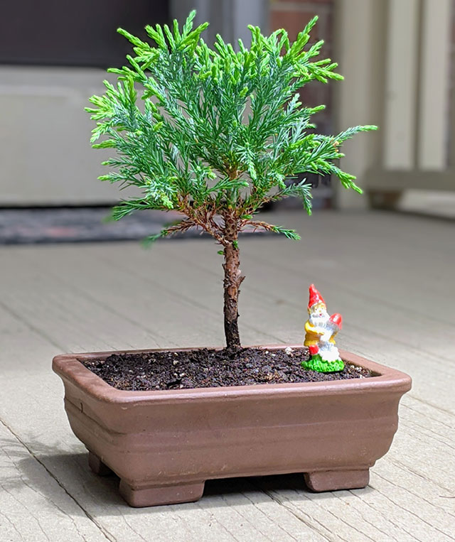
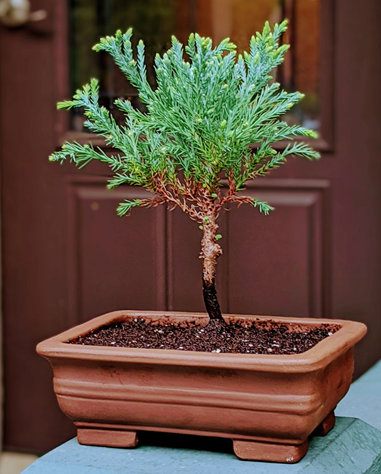

6/6/2020
Recently I have repotted my bonsai tree for the first time. This was my first real repotting where I actually put the tree in a legit bonsai pot. The past two years it has been in a plastic growing pot. I didn't realize but my hometown of Harrisburg has an everything-you-need bonsai wearhouse called Superfly Bonsai. I ordered online and made the short trip to pick up my $15 pot an hour later. I watched a few repotting videos on youtube but I mostly crossed my fingers during the repotting process. Trimmed the roots and replaced the soil.
My tree is a giant sequoia and is about 3 years old now. Nothing is more ironic than a miniture of the largest tree species on earth. It has been growing pretty well in Pennsylvania, I have it potted in a cactus soil mix which is light and peat mossy.
Most of the care has been some light trimming and making sure to keep the soil moist as sequoia's like constantly damp soil from a humid environment. During the deep freeze of winter I bring it inside, but for the most part it just hangs in the backyard.
Fingers crossed this little redwood keeps going strong!